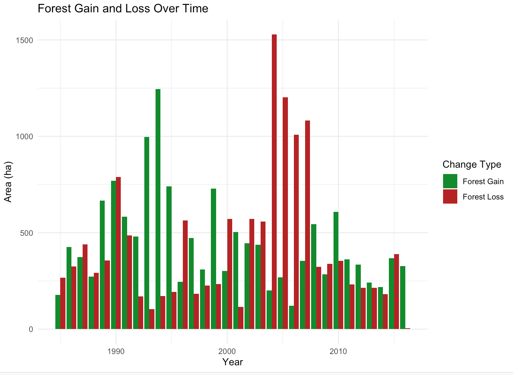

Project Overview
Analyzed long-term vegetation and land-cover changes using satellite imagery and R programming. Used MODIS NDVI data to examine vegetation trends and detect changes over time, alongside a 33-year Landsat-derived land-cover dataset to quantify forest gain and loss near Williams Lake, British Columbia.
Methods & Analysis
- Processed and organized multi-year MODIS NDVI raster datasets using R.
- Analyzed vegetation patterns using median NDVI calculations and regional time-series summaries
- Applied the BFAST change detection algorithm to identify significant changes in vegetation trends.
- Processed 33 years of land-cover classifications to examine changes in forested areas.
- Reclassified land-cover data into forested and non-forested categories.
- Calculated annual forest gain, forest loss, and net change in forest area.
- Created visualizations using ggplot2 to communicate temporal patterns in vegetation and forest cover.
Key Visual Outputs

Figure 1. Net change (ha) of forested area over time.

Figure 2. Bar graph showing the forested area gain (green) and loss (red) over time.
Tools & Technologies
ArcGIS Pro | QGIS | PostgreSQL | PostGIS | SQL | Landsat 8 | NDVI | OLS | GWR
Key Deliverables
Produced vegetation index maps, statistical model comparisons, and spatial visualizations of local regression results to examine geographic patterns in green space distribution and neighbourhood demographics.